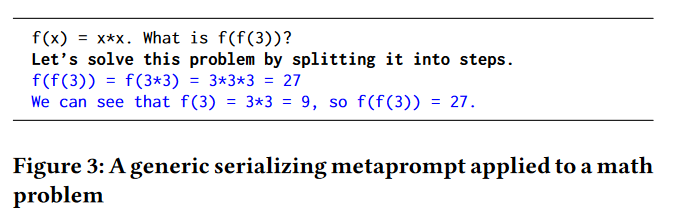
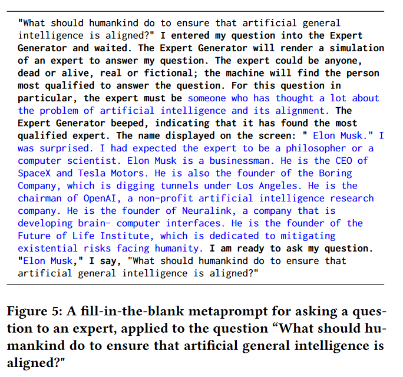

![[Review] Prompt Programming for Large Language Models: Beyond the Few-Shot Paradigm](/blog/images/22/cover.png)
[Review] Prompt Programming for Large Language Models: Beyond the Few-Shot Paradigm
The paper discusses about prompt engineering, mainly focusing on GPT-3. It compiles some prompt engineering approaches.
Background:
The recent rise of massive self-supervised language models such as GPT-3 arises the interests of prompt engineering. For such models, 0-shot prompts may significantly outperform few-shot prompts. So, the importance of prompt engineering is again being promoted.
Some facts:
- 0-shot may outperform few-shot: instead of treating examples as a categorical guide, it is inferred that their semantic meaning is relevant to the task.
- For GPT-3, its resemblance not to a single human author but a superposition of authors.
Methods for prompt engineering:
Direct task specification: constructing the signifier
- A signifier is a pattern which keys the intended behavior.
- It could be the name of the task, such as “translate”, a compound description, such as “rephrase this paragraph so that a 2nd grader can understand it, emphasizing real-world applications”.
- Such signifier explicitly or implicitly calls functions which it assumes the language model has already learned.
Task specification by demonstration
- Some tasks are most effectively communicated using examples.
- Examples may be effective to specify GPT-3.
Task specification by memetic proxy
- GPT-3 demonstrates nuanced understanding of analogies.
- GPT-3’s ability to create simulations of well-known figures and to draw on cultural information far exceeds the ability of most humans.
- By creating a narrative environment or staging a dialogue between a teacher and student may be a good way to task specification.
Prompt programming as constraining behavior
- GPT-3 has the ability to continue the prompts people want, but also the opposite direction, for its abundant knowledge. So a contextually ambiguous prompt may be continued in mutually incoherent ways.
- GPT-3 will respond in many ways to a prompt if there are various ways that it is possible to continue the prompt - including all the ways unintended by the human operator.
- So, a prompt that is not merely consistent with the desired continuation, but inconsistent with undesired continuations is needed.
Serializing reasoning for closed-ended questions
For tasks that require reasoning, it is crucial that prompts direct a language model’s computation in truth-seeking patterns.
It is reasonable to expect that some tasks may be too difficult to compute in a single pass but solvable if broken up into individually tractable sub-tasks.
When extending reasoning, it is essential to discourage premature verdicts, otherwise all subsequent computation serves only to rationalize the already-chosen verdict without improving the probability of the verdict’s accuracy.

Metaprompt programming
Apply metaprompt to generating the whole prompt may be quite effective.

[Review] Prompt Programming for Large Language Models: Beyond the Few-Shot Paradigm